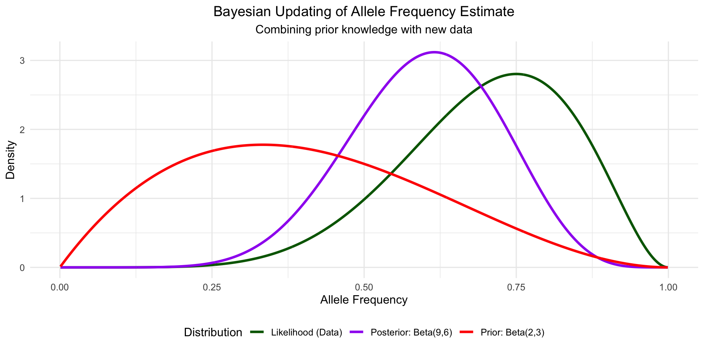
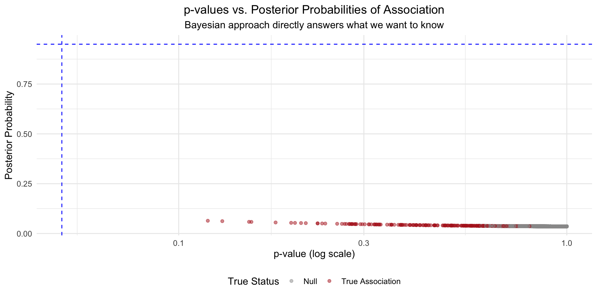
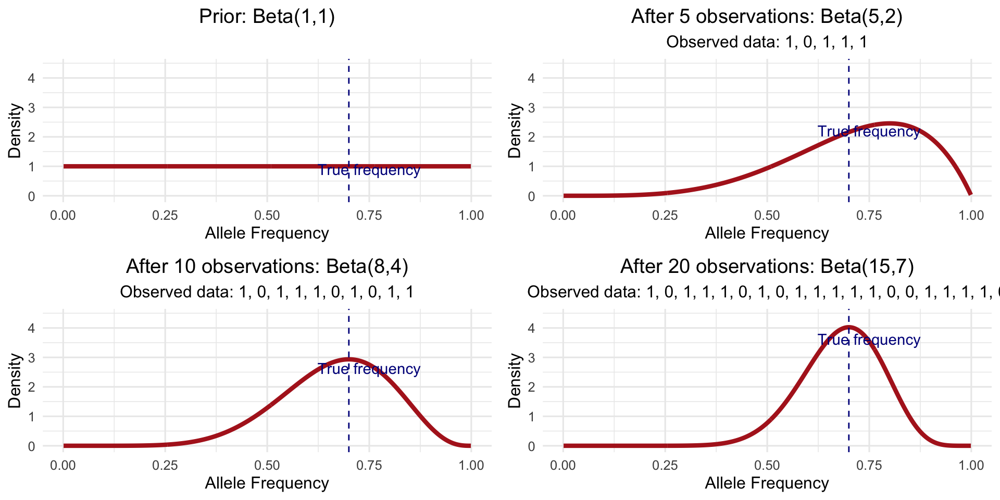
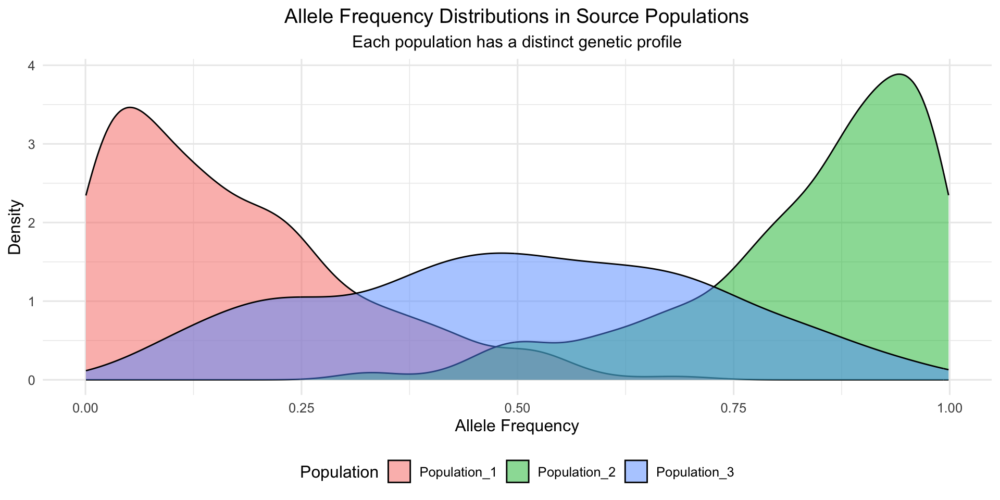
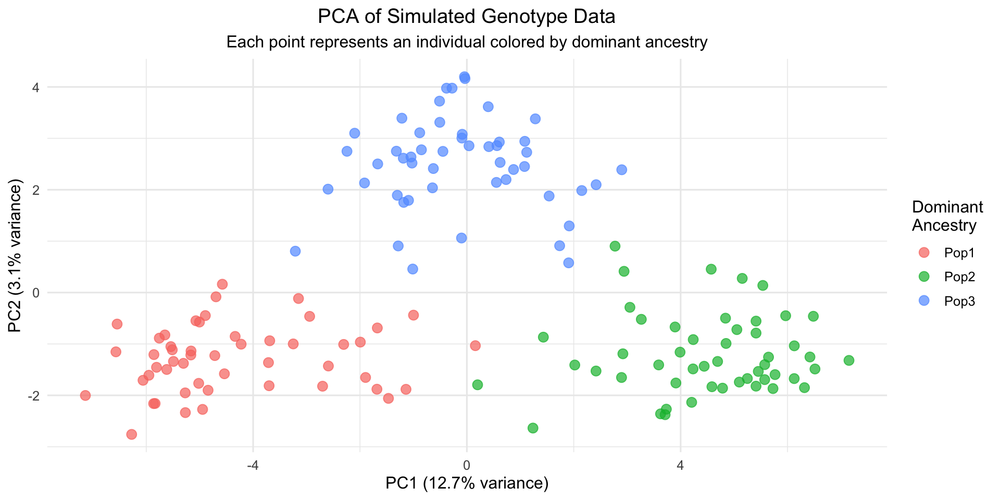

A Practical Primer on Bayesian Statistics for Population Genomics
2025-03-29
Overview
In this seminar, we’ll cover:
- Introduction to Bayesian thinking and posterior distributions
- The p-value fallacy and Bayesian alternatives
- Conjugate priors for genetic models (Beta-Binomial, Dirichlet)
- Mixture models for population structure
- Clinical trials with flat priors - lessons for genomics
- Multivariate normal mixtures (mash)
Introduction to Bayesian Thinking
Why Bayesian for Population Genomics?
Population genomics presents unique challenges:
- Multiple testing across thousands/millions of variants
- Complex patterns across populations and traits
- Prior knowledge from evolution and previous studies
- Decision-making under uncertainty
Bayesian approaches offer elegant solutions to these challenges.
Bayes’ Theorem - The Core Idea
\[P(H|D) = \frac{P(D|H) \times P(H)}{P(D)}\]
Where:
- \(P(H|D)\) is the posterior probability - what we want to know
- \(P(D|H)\) is the likelihood - how probable the data is under our hypothesis
- \(P(H)\) is the prior probability - what we knew before
- \(P(D)\) is the evidence - a normalizing constant
Simply: Posterior ∝ Likelihood × Prior
Bayesian Updating: Visual Intuition
The p-value Fallacy and Bayesian Solutions
The Problem with p-values
- Misinterpreted: p-values ≠ probability the null is true
- Multiple testing chaos: Testing thousands of variants requires arbitrary corrections
- No prior knowledge: Each test ignores previous research
- Binary thinking: Significance thresholds create false dichotomies
The p-value fallacy
“If the null hypothesis is true, the probability of obtaining data as extreme or more extreme than what was observed is p.”
NOT: “The probability that the null hypothesis is true is p.”
From p-values to Posterior Probabilities
For a genetic association test with Z-score:
Bayesian posterior: \[P(H_1 | Z) = \frac{P(Z | H_1) \times P(H_1)}{P(Z | H_1) \times P(H_1) + P(Z | H_0) \times P(H_0)}\]
Using Bayes Factor (BF): \[\text{BF} = \frac{P(Z | H_1)}{P(Z | H_0)}\] \[P(H_1 | Z) = \frac{\text{BF} \times P(H_1)}{\text{BF} \times P(H_1) + P(H_0)}\]
p-values vs. Posterior Probabilities
Bayesian Decision Theory
Conjugate Priors: Elegant Bayesian Updating
The Beta-Binomial Model for Allele Frequencies
For allele frequency \(\theta\) with Beta prior and binomial data:
- Prior: \(\theta \sim \text{Beta}(\alpha, \beta)\)
- Likelihood: \(x | \theta \sim \text{Binomial}(n, \theta)\)
- Posterior: \(\theta | x \sim \text{Beta}(\alpha + x, \beta + n - x)\)
The posterior mean is a weighted average: \[E[\theta|x] = \frac{\alpha+x}{\alpha+\beta+n}\]
Beta Updating with More Data
Dirichlet-Multinomial for Population Structure
The multivariate extension of Beta-Binomial:
- Prior: \(\mathbf{q} \sim \text{Dirichlet}(\alpha_1, \ldots, \alpha_K)\)
- \(p(\mathbf{q}) \propto \prod_{k=1}^K q_k^{\alpha_k-1}\)
- Likelihood: \(\mathbf{x} | \mathbf{q} \sim \text{Multinomial}(n, \mathbf{q})\)
- \(p(\mathbf{x} | \mathbf{q}) = {n \choose {x_1, \ldots, x_K}} \prod_{k=1}^K q_k^{x_k}\)
- Posterior: \(\mathbf{q} | \mathbf{x} \sim \text{Dirichlet}(\alpha_1 + x_1, \ldots, \alpha_K + x_K)\)
- \(p(\mathbf{q} | \mathbf{x}) \propto \prod_{k=1}^K q_k^{\alpha_k + x_k - 1}\)
Dirichlet Distributions Visualized
Mixture Models for Population Structure
The Mathematics of Mixture Models
A mixture model with \(K\) components is defined as:
\[p(x) = \sum_{k=1}^K \pi_k \, f_k(x | \theta_k)\]
Where: - \(\pi_k\) are mixing proportions (\(\sum_{k=1}^K \pi_k = 1\)) - \(f_k(x | \theta_k)\) are component densities - \(\theta_k\) are parameters for each component
For population structure: - Components = ancestral populations - Mixing proportions = ancestry percentages - Component densities = population-specific allele frequencies
Simulating Population-Specific Allele Frequencies
Admixed Populations - The Model
For an individual with admixture proportions \(q = (q_1, q_2, \ldots, q_K)\):
The effective allele frequency at locus \(j\) is: \[p_{ij} = \sum_{k=1}^K q_{ik} \cdot f_{kj}\]
Where: - \(p_{ij}\) = effective allele frequency for individual \(i\) at locus \(j\) - \(q_{ik}\) = ancestry proportion from population \(k\) - \(f_{kj}\) = allele frequency in population \(k\) at locus \(j\)
Genotypes are generated as: \[g_{ij} \sim \text{Bernoulli}(p_{ij})\]
Generated Admixed Individuals
Visualizing with PCA
Bayesian Inference for Mixture Models
The Bayesian framework:
Latent variables: - \(z_i\) = population assignment for individual \(i\) - \(P_{kj}\) = allele frequency for population \(k\) at locus \(j\)
Likelihood: \[p(g_{ij} | z_i = k, P_{kj}) = P_{kj}^{g_{ij}} (1 - P_{kj})^{1 - g_{ij}}\]
Priors: - \(P_{kj} \sim \text{Beta}(a, b)\) (e.g., \(\text{Beta}(1,1)\) = uniform) - \(z_i \sim \text{Categorical}(\pi_1, \ldots, \pi_K)\)
Posterior: \[p(Z, P | G) \propto p(G | Z, P) p(Z) p(P)\]
Gibbs Sampling Implementation
We can implement a Gibbs sampler with two steps:
Update \(z_i | P, G\) for each individual: \[p(z_i = k | P, G) \propto \pi_k \prod_{j=1}^J P_{kj}^{g_{ij}} (1 - P_{kj})^{1 - g_{ij}}\]
Update \(P_{kj} | z, G\) for each population and locus: \[P_{kj} | z, G \sim \text{Beta}(a + \sum_{i: z_i=k} g_{ij}, b + \sum_{i: z_i=k} (1 - g_{ij}))\]
This gives us a Markov Chain that converges to the posterior distribution.
Clinical Trials and Non-Informative Priors
The Value of Flat Priors
In both clinical trials and genomics, flat priors are useful when:
- Limited prior knowledge exists
- You want the data to “speak for itself”
- Results need to be defensible to skeptical audiences
For a proportion parameter (e.g., allele frequency):
- Uniform prior: \(\theta \sim \text{Beta}(1,1)\)
- Posterior: \(\theta | y \sim \text{Beta}(1+y, 1+n-y)\)
Example: Clinical Trial with Flat Prior
Direct Probability of Treatment Benefit
Multivariate Normal Mixtures and mash
The Multivariate Challenge in Genomics
Genomic studies often examine effects across multiple:
- Traits (height, weight, BMI)
- Tissues (liver, muscle, brain)
- Populations (African, European, Asian)
- Conditions (different environments/exposures)
Existing approaches have limitations: - Single-trait analysis wastes information - Fixed-effects meta-analysis ignores heterogeneity - Random-effects models are too simplistic
Multivariate Adaptive Shrinkage (mash)
mash provides a flexible Bayesian framework for:
- Sharing information across related phenotypes/tissues
- Identifying consistent vs. context-specific effects
- Handling multiple testing across thousands/millions of loci
- Improving estimation accuracy by borrowing strength
For variant \(j\) across \(R\) conditions:
\(\hat{\beta}_j \sim N(\beta_j, S_j)\)
With prior on true effects:
\(\beta_j \sim \sum_{k=1}^K \pi_k N(0, U_k)\)
Key Covariance Matrices in mash
mash uses a mixture of covariance matrices to capture different patterns:
- Identity: \(U_I = \sigma^2 I\) (Independent effects)
- Rank-1: \(U_R = \sigma^2 \mathbf{1}\mathbf{1}^T\) (Perfectly correlated effects)
- Condition-specific: \(U_r = \sigma^2 \mathbf{e}_r\mathbf{e}_r^T\) (Effect only in condition \(r\))
- Data-driven: Learned from patterns in the data
Simulated Multivariate Effects
mash Posterior Calculations
For each covariance matrix \(U_k\), the posterior distribution is:
\(\beta_j | \hat{\beta}_j, U_k, S_j \sim N(\mu_{jk}, V_{jk})\)
Where: - \(V_{jk} = S_j - S_j(S_j + U_k)^{-1}S_j\) - \(\mu_{jk} = V_{jk}S_j^{-1}\hat{\beta}_j\)
The posterior mean under the mixture:
\(E[\beta_j | \hat{\beta}_j] = \sum_{k=1}^K w_{jk} \mu_{jk}\)
Where weights come from the marginal likelihood:
\(w_{jk} \propto \pi_k (2\pi)^{-d/2}|S_j + U_k|^{-1/2}\exp\left(-\frac{1}{2}\hat{\beta}_j^T(S_j + U_k)^{-1}\hat{\beta}_j\right)\)
Improved Estimation with mash
Adaptive Designs in Population Genomics
Sequential Analysis and Sample Size Optimization
Decision-Theoretic Framework
Conclusion and Resources
Key Takeaways
- Bayesian statistics offers a coherent framework for population genomics
- Posterior probabilities directly answer: “What’s the probability of association?”
- Conjugate priors provide elegant solutions for allele frequencies and population structure
- Decision theory allows optimal tradeoffs between false discoveries and missed associations
- Multivariate models like mash leverage information across related traits
- Bayesian adaptive designs optimize resource allocation
Software Tools and Resources
- R Packages
rstan,brms: General Bayesian modelingmashr: Multivariate adaptive shrinkagestructure,admixture: Population structure
- Books & Resources
- “Statistical Rethinking” by Richard McElreath
- “Bayesian Data Analysis” by Gelman et al.
- Five Minute Statistics: Short tutorials on Bayesian concepts
- Applications
Questions?
Thank you for your attention!

Population Genomics Methods Seminar